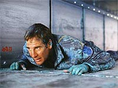
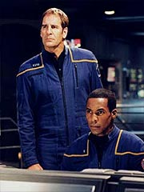
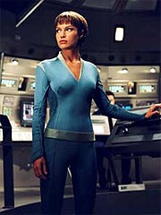
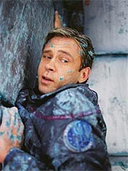

|
MANCHETE
DO EPISDIO
Produtores
experimentam com nova
forma de contar histrias em srie
Episdio
anterior | Prximo episdio Sinopse: O
Conselho Xindi reunido discute a entrada da Enterprise na Extenso Dlfica. Teria
sido uma coincidncia? O representante dos Xindis-Insetides est convencido de
que o nicio de uma invaso da Terra, mas os aliengenas decidem esperar e acompanhar
o andamento dos eventos.
A bordo da NX-01, Archer est frustrado pela
ausncia de informaes sobre os Xindi, mesmo depois de seis semanas na Extenso
Dlfica. A nica novidade uma anomalia espacial numa rea de carga que faz o
centro de gravidade oscilar de uma parede para outra sem explicao aparente.
Por isso, o capito no hesita em seguir a nica pista obtida at agora, vinda
de um cargueiro: segundo o aliengena contatado, deve haver um trabalhador Xindi
numa mina de trilium-D, em um planeta no muito longe dali.
Apesar das
recomendaes de cautela de Reed, Archer decide ir at l e contatar o chefe das
operaes, perguntando por seu funcionrio Xindi. O aliengena confirma a existncia
desse trabalhador, mas pede em troca meio litro de platina, em estado lquido.
Acompanhado por Reed, Archer diz que concorda com os termos, mas precisa antes
se certificar de que o aliengena um Xindi, fazendo varreduras. O chefe das
operaes diz que no ser necessrio e entrega um pequeno pacote ao capito.
Quando ele abre, h um dedo nele. Segundo o aliengena, um acidente...
 De volta Enterprise, Trip --que
est com dificuldades para dormir desde a perda de sua irm no ataque Terra--
comea a trabalhar na extrao da platina de partes da nave para entregar ao chefe
das operaes na mina. Quando o processo concludo, ele e Archer vo pessoalmente
ao planeta para fazer a troca e interrogar o Xindi.
Ao encontrarem o
trabalhador, perguntam simplesmente as coordenadas de seu mundo natal. Mas o Xindi
se recusa a cooperar, a no ser que Archer se comprometa a lev-lo dali --ele
revela que todos so escravos naquele local e que seu dedo foi de fato arrancado,
e no perdido num acidente. Trip fica furioso com a falta de cooperao e pega
o Xindi pelos colarinhos, enquanto Archer contatado por T'Pol. Ela informa que
trs naves fortemente armadas se aproximam do planeta.
Diante da ameaa,
Archer decide voltar nave, mas se v preso na mina. As comunicaes com T'Pol
tambm so cortadas. A primeiro-oficial contata o chefe das operaes, cobrando
satisfaes, mas este informa que o capito sofrer um atraso, de no mais de
uma hora, no retorno nave. Segundo ele, o problema se deu com a preparao das
plataformas de pouso para as naves de carga que estariam se aproximando --o processo
aparentemente cortaria a comunicao com os andares inferiores.
No convencida,
T'Pol instrui Reed a trabalhar com os MACOs um plano de resgate para Archer e
Trip. Enquanto isso, auxiliados pelo Xindi, os dois j esto arquitetando seu
prprio plano de fuga. O aliengena leva a dupla at um antigo poo de transporte
de plasma desativado. Por ele, seria possvel chegar at a superfcie.
Intrigados sobre o porqu de o Xindi no ter tentado isso antes, o aliengena
responde que a atmosfera externa txica, e s valeria a pena caso houvesse a
certeza de uma nave esperando l fora -- caso que se apresenta agora.
 O chefe das operaes
monitora os movimentos de Archer e Trip e decide impedi-los de fugir: seu objetivo
convert-los (junto com toda a tripulao da Enterprise) a novos trabalhadores
forados para a mina. Ele ordena o desvio de uma corrente de plasma para um dos
dutos inutilizados, o que obriga o trio em fuga a recuar. No recuo, eles so capturados.
Felizmente a captura coincide com a interveno dos MACOs, sob o comando
de Reed, que vieram para resgatar os dois. A operao tem sucesso, mas o Xindi
ferido no processo. Apesar disso, os tripulantes da Enterprise o ajudam a vir
a bordo, sob a promessa de receber as coordenadas do mundo natal Xindi.
A Enterprise parte minutos antes da chegada fatal das naves de guerra aliengenas,
mas Phlox pouco pode fazer pelo Xindi resgatado. Ele morre, mas antes transmite
ao mdico as coordenadas requisitadas.
Enquanto isso, Trip continua com
seus problemas para dormir e Phlox monta um estratagema para que ele v aos aposentos
de T'Pol, onde ela ir usar uma tcnica Vulcana para curar a insnia. O plano
do mdico d certo, aps alguma resistncia de Trip.
A NX-01 finalmente
chega s coordenadas, mas descobre que no h mais nenhum planeta ali -- o que
havia foi destrudo h 120 anos, e agora s restam destroos. Apesar disso, traos
de civilizao so encontrados e eles so mesmo compatveis com a tecnologia Xindi,
o que aumenta o mistrio para Archer e seus comandados.
Enquanto isso,
no Conselho Xindi, os aliengenas comentam que a Enterprise est prestes a entrar
numa rea da extenso em que as anomalias espaciais so ainda mais perigosas...
Comentrios:
"The
Xindi" claramente marca o incio de uma nova experincia para Rick Berman
e Brannon Braga no sentido de planejar uma srie. Do ponto de vista estrutural,
oferecendo um fim em si mesmo e ao mesmo tempo alimentando uma saga contnua,
o episdio cumpre seu papel.
Infelizmente, se a forma da narrativa foi
acertada, o mesmo no se pode dizer acerca de seu contedo. Vemos aqui os mesmos
artifcios de roteiro que foram exageradamente utilizados nas ltimas duas temporadas.
E os elementos novos pouco fizeram para adicionar valor a esse episdio.
Tudo bem, somos finalmente introduzidos aos Xindi, e isso interessante, embora
a cena inicial no Conselho me lembre mais o estilo de uma certa franquia Jedi
do que o aspecto visual de um episdio de Jornada nas Estrelas. Mais uma
vez repito, os novos inimigos oferecem potencial. Mas ser preciso garimp-lo.
Neste primeiro episdio, no vemos nada disso, exceto por algum bate-papo sobre
a composio multiespecfica desss aliengenas.
 E
Archer capturado! Mais uma vez! E Malcolm Reed precisa criar um plano para resgat-lo!
Sim, de novo! A nica grande diferena neste episdio a presena dos MACOs,
a tropa de elite militar que se juntou Enterprise para a nova temporada. Novamente
uma opo potencialmente interessante, que acabou no cumprindo esse potencial
dramtico em sua primeira utilizao.
O que d mais medo, nesse quesito,
que houve uma real tentativa para arrancar drama desse elemento especfico,
na forma do confronto entre o major Hayes e Malcolm Reed. Mas as motivaes para
essa confrontao (ou ao menos a explicao que Reed viu para ela) no convencem,
nem se justificam de alguma maneira na histria.
No que diz respeito
ao enredo em si, os MACOs descem, resgatam os prisioneiros, fazem um trabalho
excelente e voltam nave, sem qualquer conflito estratgico entre eles e a filosofia
de trabalho de Reed. Pela histria, a insatisfao do oficial de armamentos
justificada apenas como mera implicncia. E no bom enfraquecer seu personagem
principal, em detrimento dos recorrentes...
A concluso do episdio,
com o planeta Xindi aos pedaos, o nico trecho realmente valoroso em termos
de histria, pois oferece aos tripulantes da Enterprise um novo mistrio a ser
investigado. Fica claro aquele aspecto "quebra-cabea" mencionado por Rick Berman
antes da estria da temporada.
Infelizmente, antes dessa cena, vem a
sequncia mais deprimente do episdio --e o pior, a verdadeira ditadora do "novo
tom" da srie em seu terceiro ano. T'Pol ensina Trip algumas tcnicas de presso
neural para ajudar a facilitar o sono do engenheiro.
Sempre vai ter gente
dizendo, "qual o problema? A T'Pol uma gata? Voc parece que no sei, hein?",
mas insisto em afirmar que esse um dos problemas da srie. Mais uma vez, antes
de sexo barato, sou favorvel dignidade e caracterizao dos personagens.
Aquela cena est to fora do que sabemos sobre os Vulcanos que nem vale a pena
mencionar todos os problemas.
S para ficar no mais sintomtico deles,
no faz sentido T'Pol dar aquelas gemidinhas enquanto Trip faz massagem nas costas
dela. At onde me lembro do nosso bom e velho Spock, os Vulcanos podem suportar
grande quantidade de dor impassveis, controlando a sensao com sua disciplina
mental. Ento o que diabos T'Pol estava fazendo, a no ser atendendo a uma "necessidade"
dos produtores por mais sex appeal com aqueles gemidos to sugestivos?
Nada contra sexo na srie, mas precisa ser feito em favor dos personagens, no
em detrimento deles. Infelizmente, tudo que diz respeito a sexo em Enterprise
tratado como uma brincadeira de adolescentes, o que certamente no cai bem comigo...
talvez com os adolescentes funcione. Os ndices de audincia diro.
 Apesar
da cena, Trip o personagem que acaba tendo mais ateno e maior trabalho psicolgico
aqui, embora muito disso seja apenas efeito residual do episdio anterior, em
que o engenheiro descobre que sua irm foi morta no ataque.
Para variar,
os efeitos especiais so o grande destaque, e o trabalho especial com o chefe
da instalao mineradora (em termos de maquiagem e caracterizao) merece uma
meno honrosa. Como sempre, o episdio impecvel em seus aspectos tcnicos.
Pelo menos a porta est aberta para melhoras. s saber trabalh-las em
termos de roteiros e histrias condizentes com o potencial. Quanto a "The
Xindi", o episdio est abaixo da mdia das aberturas de temporada entre
as sries modernas de Jornada nas Estrelas. Citaes:
Archer - "We dont have the luxury of being
safe or cautious anymore."
("No temos mais o luxo de buscarmos segurana
ou cautela.")
TPol - "Delicate is not a word I associate with Mr.
Tucker."
("Delicadeza no uma palavra que eu associo com o Sr. Tucker.")
Trivia:
 As filmagens da nova temporada comearam em 26
de junho, introduzindo dois novos cenrios fixos da Enterprise, o Centro de Comando
e a priso.
As filmagens da nova temporada comearam em 26
de junho, introduzindo dois novos cenrios fixos da Enterprise, o Centro de Comando
e a priso.
a estria do novo contingente militar da Enterprise,
a equipe de Operaes de Comando de Assaltos Militares (MACOs, na sigla em ingls).
O major Hayes interpretado por Steven Culp,
que interpretou o novo primeiro-oficial de Picard em Nemesis. A cena em
que ele aparece acabou cortada da verso final do filme.
A maquiagem do Xindi-humanide leva cerca de
1,5 hora para aplicar, segundo Tucker Smallwood. " uma prtese que vai do meio
do crnio s bochecas, e to apertada em torno dos meus olhos que muda mesmo
minha aparncia."
Brannon Braga disse: "O primeiro episdio da
temporada no comea nem na Enterprise. Abre com os Xindi, num lugar muito estranho
e misterioso, com gente insetide."
Rick Worthy interpretou dois andrides em "Prototype",
de Voyager; Koman, em "Soldiers of the Empire" (Deep Space Nine),
um oficial Elloran em "Insurreio", e Noah Lessing em "Equinox"
(Voyager).
Randy Oglesby apareceu como os gmeos Ro-Kel
e Ah-Kel, em "Vortex" (Deep Space Nine). Ele tambm interpretou
Silaran Prin, em "The Darkness and the Light" (Deep Space Nine),
e Kir, em "Counterpoint" (Voyager). Ele j participou de Enterprise,
como Trena'L, em "Unexpected".
Scott MacDonald interpretou Tosk, em "Captive
Pursuit" (Deep Space Nine); N'Vek, em "Face of the Enemy" (A
Nova Gerao); Rollins, em "Caretaker" (Voyager); e Goran'Agar
em "Hippocratic Oath" (Deep Space Nine).
Richard Lineback fez Romas, em "Symbiosis"
(A Nova Gerao), e o Trill Selin Peers, em "Dax" (Deep Space
Nine). Nathan Anderson interpretou Namon, em "Nemesis" (Voyager).
Daniel Dae Kim fez Gotana-Retz, em "Blink of an Eye" (Voyager).
Stephen McHattie interpretou o senador Vreenak em "In the Pale Moonlight"
(Deep Space Nine). Tucker Smallwood apareceu como um falso almirante Bullock
em "In the Flesh" (Voyager).
Ficha
tcnica: Escrito
por Rick Berman & Brannon Braga
Direo de Allan Kroeker
Exibido em 10/09/2003
Produo:
053 Elenco: Scott
Bakula como Jonathan Archer
Jolene
Blalock como T'Pol
John Billingsley
como Phlox
Anthony Montgomery
como Travis Mayweather
Connor Trinneer
como Charlie 'Trip' Tucker III
Dominic
Keating como Malcolm Reed
Linda
Park como Hoshi Sato Elenco
convidado:
Steven Culp como major
Hayes
Nathan Anderson como sargento Kemper
Daniel Dae Kim
como corporal Chang
Marco Sanchez como corporal Romero
Richard
Lineback como Kessick
Stephen McHattie como aliengena
Chris Freeman como guarda aliengena
Randy Oglesby como
Degra
Scott MacDonald como Xindi-Rptil
Rick Worthy
como Xindi-Preguia
Tucker Smallwood como Xindi-Humanide
Adam Taylor Gordon como jovem Trip
Episdio
anterior | Prximo episdio
|